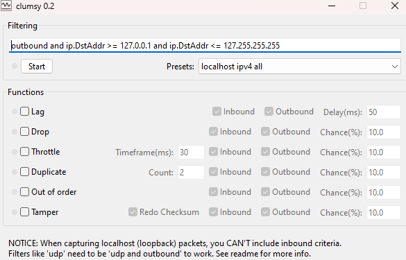

Testing the Network
We commeding using the package Multiplayer Player Mode to test your game in the editor with no need to generate a build every single time. If you want you can also just generate a build and run it as well. With the hot-reload system you can edit your code in real time and your server state will be kept with no problems, so you can tweak values or test / debug systems without the needing of rebuilding your project every single time.
The default NetBuff transport method is UDP. Using the UDPNetworkTransport you can test your game connecting multiples clients (editors and builds) with just one click!
We recommend using the Clumsy to simulate lag and packet loss between your network connections to see where your projects need more optimization / clean up. Clumsy is a free tool that can simulate lag, packet drops, out of order delivery and much more:

Using the out of order / packet drop feature you can check if some your packets that is been sent in a unreliable way should be changed to the reliable method and to check if there's any issue in the network state syncing.